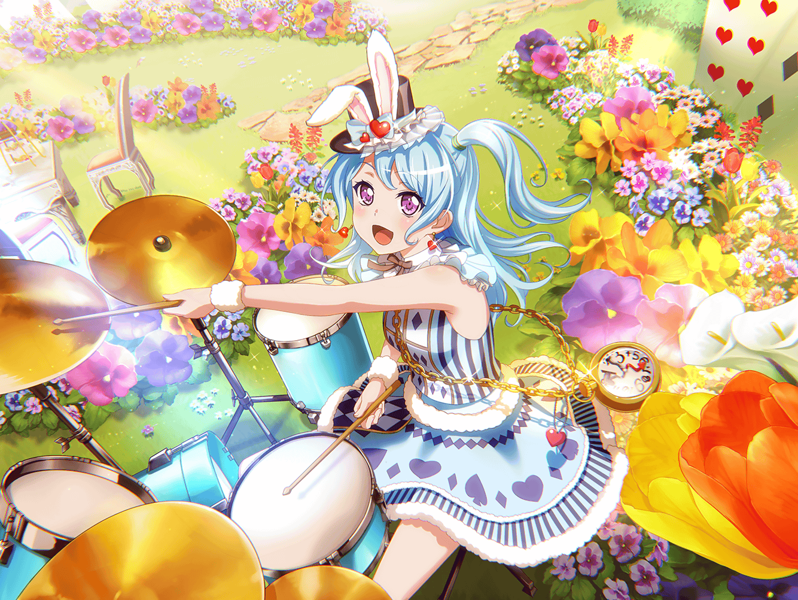

商店街
花音
はあ〜。今日はいい天気だな～
花音
あ、{{userName}}さん。
こんにちは
花音
今日はいい天気ですね〜
花音
こんな日は、お出かけとかいいですよね。
例えば……動物園とか水族館とかいいですよね！
花音
{{userName}}さんは、動物はお好きですか？
花音
私、クラゲが好きなんですけど……
最近は、うさぎさんもいいなぁって思ってるんです！
花音
あ、なんでうさぎさんかと言うと、
この前たえちゃんと有咲ちゃんに頼まれて……
花音
千聖ちゃん、イヴちゃんと一緒に、
飼育小屋から逃げたうさぎさんを捕まえるのを、
お手伝いしたんです
花音
逃げちゃった理由ですか？
うーん、小屋の扉があいていたんでしょうか？
花音
{{userName}}さんは、どう思いますか？
花音
外の世界が見てみたかった……ですか？
なるほど……
花音
あ、いえ！
全然おかしくなかったですよ！
花音
ただ、そういう考え方もあるんだなぁって思ったんです
花音
{{userName}}さん、ロマンチックな方なんですね
花音
ふふ。いいと思いますよ♪
花音
その……うさぎさんを捕まえに行った時に、
久しぶりにうさぎさんにふれたんです。
本当に、かわいかったですよ
花音
白くてモフモフしてて……あと、お鼻がピクピク動いてるのも
とってもかわいかったなあ♪ ふふっ♪
花音
ただ、うさぎさんってすごく警戒心が強くて……
餌で誘い出そうとしたんですけど、
全然、近づいてきてくれなかったんです
花音
だから、全部捕まえるのすごく大変でした
花音
でも、たえちゃんのアドバイスを聞きながら、
みんなと一緒に、あれこれ試しながら
なんとか、うさぎさんを全部捕まえる事に成功しました！
花音
……わ、私はあんまりその……
お役に立てなかったんですけど……その、捕まえようとしても
全然ダメで、転んじゃったりして……
花音
うう……情けない……
花音
けど、その……ちょっと、楽しかったんです。
みんなで、一緒にうさぎさんを捕まえようとして。
作戦まで立てて……
花音
どんな作戦か聞きたいですか？
これを考えたのは、有咲ちゃんなんですけど
花音
餌でうさぎさんを釣ったんですよ！
花音
……思ったより普通、でしたか？
えへへ……今思えばそうかもしれませんね
花音
餌を食べているところにそーっと近づいていったんですけど
結局逃げられちゃって
花音
そういう失敗も含めて、楽しかったなあ……なんて
思うんです
花音
うさぎさん達に囲まれて、みんなで頑張って……
花音
とても、現実とは思えないくらいに楽しい時間で……
まるで、物語の中に入っちゃったような……
花音
うさぎさんを追いかけていったら、どこか不思議な国に
飛び込んでいけるんじゃないかって思ったりして♪
花音
学校にいたはずなのに、いつの間にかティーパーティの
会場に迷い込んだり……ふふっ♪
花音
え、えへへ……今のは少し、妄想しすぎかもしれません……
その、今の話は内緒にしておいてください
花音
約束ですよ？
花音
……って、あっ！
もう、こんな時間なんですね。
花音
それじゃあ、
そろそろ千聖ちゃんと待ち合わせしている時間なので、
私、行きますね
花音
私がまた、素敵な物語に出会ったときは、お話聞いてください